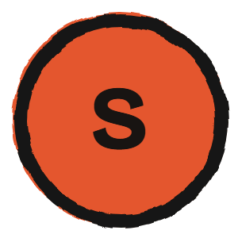

Sources
Strange things that actually happened. Every claim sourced. Pick an episode to see every source behind it.
Oddly Sourced

Strange things that actually happened. Every claim sourced. Pick an episode to see every source behind it.
Oddly Sourced